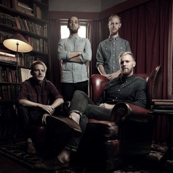
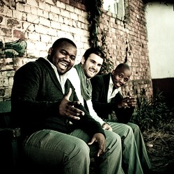
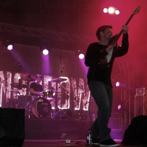

Artist:
Dan Patlansky
Genre:
Blues
Rock
Jazz
Writeup:
What Dan Patlansky can do with a six-string Fender Stratocaster at the age of 26,
most critically acclaimed guitarists will never quite achieve in a lifetime.

Artist:
Gangs of Ballet
Genre:
Dance Club
Writeup:
Their music, which combines their fresh energy with their musically intriguing melodies
and arrangements, has a hauntingly anthemic sound.

Artist:
Jeremey Loops
Genre:
Acoustic
Writeup:
Jeremy Loops aint no traditional 'band', creating music on the spot with that there
loopdaloop pedal.
Various artists also join him for free jam sessions & the music they create is all
original.
it'll definitely make ya dance like a hick!

Artist:
Matthew Mole
Genre:
Acoustic
Writeup:
I'm not that good at speaking, so bare with me here.
Music is my second nature.
It takes up a lot of my time, it drives me, it makes me who I am.

Artist:
Mi Casa
Genre:
Dance
Club
Writeup:
Mi Casa gives a whole new meaning to soulful house. This is what the world has been
yearning for & now that Mi Casa is here its so overwhelming that no words can define
their talent!

Artist:
Prime Circle
Genre:
Alternative
Writeup:
Prime Circle is a South African rock band success story.
They’ve gone from a rehearsal room in the small town of Witbank, to one of South Africa’s
most popular bands.
They formed in 2001.

Artist:
ShortStraw
Genre:
Folk Acoustic
Writeup:
Shortstraw are a joburg based band making waves on the national indie music scene
in a big way.
Artist:
The Narrow
Genre:
Alternative
Rock
Writeup:
Since forming The Narrow, the band very quickly developed their own sound and identity
whilst retaining elements of their roots.

Artist:
The Parlotones
Genre:
Rock Alternative
Writeup:
The Parlotones are known for their electric, polished stage performances delivered
against the backdrop of their deftly crafted and darkly romantic lyrics.